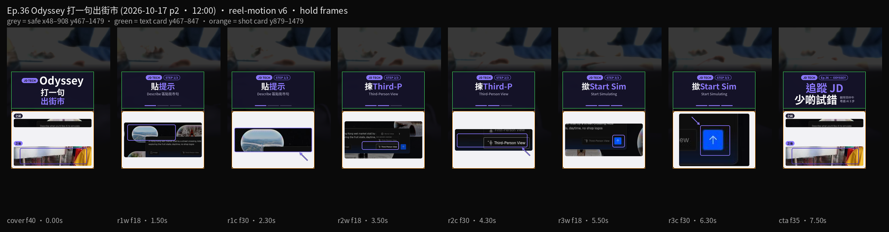

想同仔女講清楚街市過馬路長咩樣。第36集用 Odyssey-3 免費瀏覽器示範（experience.odyssey.systems）：喺 Describe 貼一句英文，揀 Third-Person View，撳 Start Simulating，等畫面砌出街市世界。示範係過馬路加仔女睇生果檔，無店名 logo。免註冊。公開試玩大約五分鐘一轉。
Reel 一句講晒：Odyssey｜打一句／出街市
48 小時內：Odyssey-3 免費瀏覽器示範，公開試玩大約 2026-10-15 開放。本集放 2026-10-17 12:00（香港時間）熱話位。本頁未附獨立新聞稿連結，以 experience.odyssey.systems 當日畫面為準。
你會學到
- 點樣喺 Describe 區貼一句港街市英文
- 點樣撳相機掣揀 Third-Person View
- 點樣撳 Start Simulating，等街市世界出嚟
開始前準備
- 瀏覽器開 experience.odyssey.systems。示範冇註冊、冇裝 App
- 一句英文提示。中文可以試，英文最穩。下面有示範句，可以照抄
- 公開試玩大約五分鐘一轉。時間過咗要重新開始

可抄提示
示範句（英文，無店名 logo）
A Hong Kong wet market stall by a street crossing, kids exploring the fruit stalls, daytime, no shop logos
3 步做法
-
貼提示：開 experience.odyssey.systems，喺 Describe 區貼上面嗰句，或者你自己改過嘅港街市英文。提示用英文最穩。空框原文係「Describe what you'd like AI to simulate」。
-
揀 Third-Person View：撳相機掣，揀 Third-Person View，方便跟住畫面入面嘅人行。本集用呢個視角，唔好停喺其他鏡頭。
-
撳 Start Simulating：撳藍色向上箭頭 Start Simulating，等 AI 砌出街市世界，畀仔女睇過馬路同生果檔。示範畫面避咗店名 logo。唔好將真實商戶招牌寫入提示，亦唔好影真實招牌入去。
常見錯誤／注意事項
- 用中文提示唔穩：2026-10-16 試玩，英文最穩。中文可以試，出唔到世界就改返英文。
- 揀錯視角：本集要 Third-Person View。相機掣入面有其他選項，跟住人行就揀呢個。
- 寫入或者影入真實招牌：示範無店名 logo。真實商戶名、招牌、舖面唔好放進提示。
- 當試玩唔會完：公開試玩大約五分鐘一轉。過咗要再開一次。
- 當畫面係真實街市：係 AI 砌出嚟嘅世界，用嚟講過馬路長咩樣。路口同檔口仍然要喺現場自己睇。
示範無店名 logo。整好可以傳俾仔女或者家長睇。呢頁唔係叫你轉發呢則片。
香港用戶留意
用瀏覽器開英文頁就得，示範冇註冊、冇裝 App。要認嘅字：Describe、Third-Person View、Start Simulating。提示用英文。五分鐘左右一轉，未睇完可以再撳一次 Start Simulating。
官方說明
- Odyssey-3 免費瀏覽器示範
2026-10-16 打開：Describe 區貼提示，相機掣可以揀 Third-Person View，送出係藍色向上箭頭 Start Simulating。示範冇註冊。公開試玩大約五分鐘一轉。介面以你當日畫面為準
（experience.odyssey.systems 當日打開。介面可能更新，以官方為準）
原帖
睇原 Reel ↗（2026-10-17 發佈）